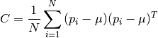
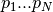

Processing routines¶
Normal estimation¶
-
pptk.estimate_normals()¶ Estimates normals at all points using principal component analysis (PCA). Specifically, computes eigenvectors of the covariance matrix C based on the local neighborhoods of each point.

where  are the points in a given neighborhood and
 is the centroid of the points.
is the centroid of the points.Parameters: - points (3-column numpy array of type float32 or float64) – Input point cloud.
- k (int) – Number of neighbors to use. For pure r-near neighborhoods, set this to -1.
- r (float) – Use neighbors within r of query point. For pure k-nearest neighborhoods, set this to np.inf.
- subsample (1-d array of bool or int, optional) – Optionally estimate normals at subset of points specified by a boolean mask having length equal to the number of points, or by integer indices into the array of points. Default: None.
- output_eigenvalues (bool, optional) – Default: False.
- output_all_eigenvectors (bool, optional) – Default: False.
- output_neighborhood_sizes (bool, optional) – Default: False.
- verbose (bool, optional) – Default: True.
- num_procs (int, optional) – Default: use all processors.
Returns: results (ndarray or tuple of ndarray’s) – PCA results. The tuple return type is triggered if any of output_eigenvalues or output_neighborhood_sizes is True.
The following table summarizes all potential return types. Here m is the number of PCAs performed. If subsample is not None, then m is the size of subsample. Otherwise, m is just the number of input points.
output_all_eigenvectors F T output_eigenvalues
output_nbhd_sizes
F, F m x 3 m x 3 x 3 F, T (m x 3, None, m) (m x 3 x 3, None, m) T, F (m x 3, m, None) (m x 3 x 3, m x 3, None) T, T (m x 3, m, m) (m x 3 x 3, m x 3, m) Note
- The j-th eigenvector of the i-th PCA result is given by indices [i, j, :].
- eigenvectors are sorted in order of increasing eigenvalue
k-d tree¶
-
kdtree._build()¶ Builds k-d tree.
Parameters: - points (n x k numpy array) – Currently supports any numeric type and any k in [2, 4].
- numprocs (int, optional) – Default: use all processors.
- maxleafsize (int, optional) – Leaf nodes have at most this many points. Default: 10.
- emptysplit (float, optional) – Empty splits are performed for gap ratios greater than this value. Default: 0.2
Returns: tree (capsule object) – This object is meant to be passed into the kdtree._query method.
-
kdtree._query()¶ Query k-d tree for nearest neighbors.
Query points can be specified by one of the following ways (n is the number of points in the k-d tree and m the number of queries):
- k-d points (m x k numpy array)
- integer indices (list or numpy array of m integers; negative integers supported)
- boolean selection mask on the n points used to build the k-d tree (numpy array of n bools)
For each query point, this function returns up to k nearest neighbors that have distances strictly less than dmax from the query point.
Parameters: - tree (capsule object) – A k-d tree as produced by kdtree._build.
- queries (numpy array) – Specify query points by one of the ways above.
- k (int, optional) – Default: 1
- dmax (float or double, optional) – Default: inf
- numprocs (int, optional) – Default: use all processors.
Returns: results (list of m numpy arrays of integer indices)